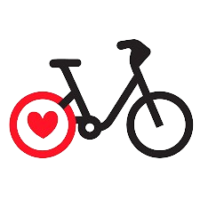

Publicité
Crédit

Map Velov
Sélectionnez une commune :
Sélectionnez le type de données à afficher :
Vélos disponibles
Stands disponibles
Vélos électriques disponibles
Vélos mécaniques disponibles
Heure de début:
00:00
01:00
02:00
03:00
04:00
05:00
06:00
07:00
08:00
09:00
10:00
11:00
12:00
13:00
14:00
15:00
16:00
17:00
18:00
19:00
20:00
21:00
22:00
23:00
Heure de fin:
00:00
01:00
02:00
03:00
04:00
05:00
06:00
07:00
08:00
09:00
10:00
11:00
12:00
13:00
14:00
15:00
16:00
17:00
18:00
19:00
20:00
21:00
22:00
23:00
Jour:
Tout
26/11/2023
27/11/2023
28/11/2023
29/11/2023